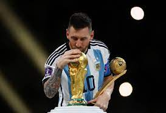
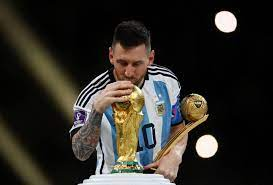

About Section:
Lionel Messi, often simply referred to as "Messi," is one of the greatest and most celebrated footballers of all time. Born on June 24, 1987, in Rosario, Argentina, Messi's incredible talent and dedication to the sport have earned him a place in the annals of football history. His career has been defined by numerous accolades
and records that highlight his extraordinary abilities on the field.
Story Section:
Messi's football journey began at a young age, playing for the youth team of his local club, Newell's Old Boys. However, at the age of 13, he relocated to Barcelona, Spain, to join FC Barcelona's youth academy, La Masia. It was here that he would rise through the ranks and eventually make his debut for the first team in 2004. Over the next 17 years, Messi would become the face of FC Barcelona
and one of the most iconic figures in the club's history.
 
